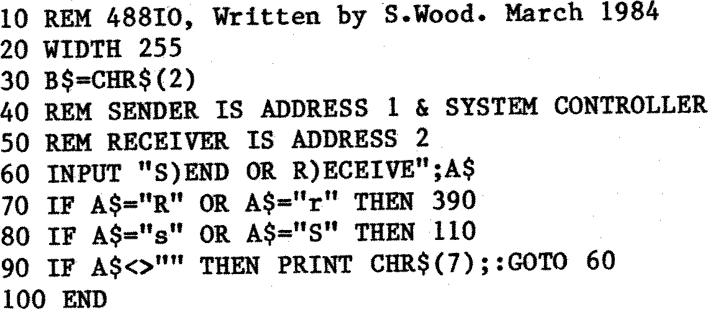
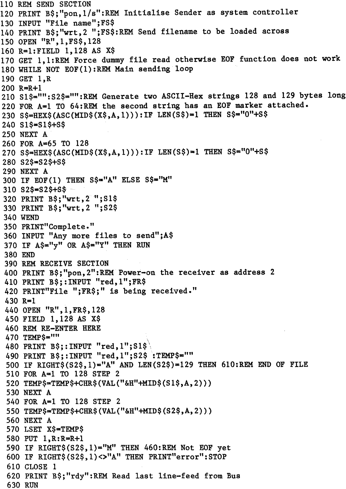

CP/M File Transfer Program Via The IEEE488 Bus.
By S. Wood
Below is a simple program written in BASIC-80 which, if present on two
machines fitted with the EV Computing
IEEE488 interface, will allow data files
to be transfered between them at a reasonable rate. The speed loss is due to
the amount of data conversion done in BASIC, but it is still faster than
serial interface methods previously used. Shortly a machine code version with
more features will be made available which will be able to transfer files very
fast indeed (approaching 200 K bytes a second). The speed limitation then will
be in the disk drives and not in the software or interface.

